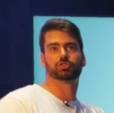

años de experiencia
Te ofrezco estrategias técnicas y de crecimiento adaptadas a la nueva era de la búsqueda, donde Google, la inteligencia artificial y la geolocalización se combinan para ofrecer respuestas únicas.
La búsqueda ya no se trata solo de palabras clave. Con motores de búsqueda impulsados por IA, respuestas personalizadas y resultados basados en ubicación, tu marca necesita estrategias que se adapten más rápido que los algoritmos.
Te ayudo a aprovechar este cambio para que tu visibilidad crezca en lugar de desaparecer.
Cada vez más consultas se resuelven con agentes de IA que deciden por el usuario qué marca recomendar; invierte para que la tuya sea la elegida.
Experiencia SEO
Profesor Máster Marketing Digital
Universidad de Salamanca, Deusto y UNIR
SEO Manager
Internet Advantage & Smartup
Consultor SEO
Traffic4U
Analista
Indra
Universidad de Salamanca, Deusto y UNIR
SEO Manager
Internet Advantage & Smartup
Consultor SEO
Traffic4U
Analista
Indra
Diseño estrategias, audito el trabajo SEO, formo equipos o acompaño en la transformación digital en la era de la IA. Me adapto a las necesidades de cada empresa.
Auditoría SEO
Estrategia SEO
Diseño WEB SEO
Formación de equipos
SEO / GEO sobre LLM
Agentes de IA & Automatización
Estos son algunos de los clientes y proyectos en los que he participado a lo largo de los últimos años


¿No sabes cómo está el SEO de tu marca?
Te ayudo a analizarlo desde mi experiencia técnica y con una visión estratégica orientada al crecimiento.
Contratar auditoría independienteLo que dicen de mí clientes y compañeros
Emilio es una persona muy minuciosa y perfeccionista en todas y cada una de las tareas que ha de llevar a cabo, además de ser un gran compañero, siempre dispuesto a ayudar para que los objetivos sean alcanzados en el tiempo previsto. Es una persona con gran capacidad de trabajo y enormes aptitudes para el trabajo en equipo. Fue una gran suerte poder contar con él a mi lado durante mi estancia en Traffic4u
Pablo Pérez Tejedor
Gerente Centros Comerciales Castilla y Leon
Excelente profesional con un dominio absoluto de su área de especialización, combinado con una atención y un trato personal impecable, fácil y de lo más agradable.
Francisco Portela Oviedo
Director de Desarrollo de Negocio del Grupo COPE
He trabajado con Emilio tanto con clientes compartidos como bajo su "mando" y para mi siempre ha sido un referente, mentor y amigo. No sólo es de los mejores en lo suyo, que no lo digo fácilmente, sino que es alguien del que siempre tienes algo que aprender y en quien apoyarte cuando tienes dificultades, dudas o necesitas una segunda opinión. ¡Siempre en mi equipo!.
Alberto Blanco Pérez
Director SEO en AB+
Un experto del marketing digital, en particular el SEO y analítica web, y con los conocimientos técnicos para llevarlo a cabo, Emilio es capaz de cerrar la brecha entre el marketing digital y la implantación técnica. Puede "desatascar" cuellos de botella técnicos, algo muy poco común y de gran valor en cualquier proyecto digital. Es organizado, eficiente, y es un placer trabajar con él.
Chris Curme
Digital Marketing Lead at Oxford's Said BS
Emilio es un gran compañero y un excelente profesional del SEO. Su experiencia técnica le permite profundizar en los detalles de un sitio web sin perder de vista al usuario ni a los motores de búsqueda. Es un trabajador en equipo, orientado a la eficiencia y con excelentes habilidades de comunicación, capaz de explicar estrategias complejas de forma sencilla.
Paqui Martín
Consultora SEM Freelance
Emilio es un SEO experimentado desde 2009, ingeniero informático y con amplia experiencia en áreas técnicas y de negocio. Mas allá de esos títulos y descripción es un compañero de sector con una gran reputación, pasión por lo que hace y en quien se puede confiar.

Carlos Manuel Sánchez Donate
SEO Freelance
Emilio es un gran profesional del sector del SEO, he colaborado con él en algunas ocasiones y es un gustazo! Además, es de estas personas a las que hay que seguir en redes, sí o sí, porque el conocimiento que comparte es oro!
Carlos González
Consultor SEO/GEO Freelance
Preguntas frecuentes
¿Qué diferencia hay entre el SEO tradicional y el GEO/AEO?
Para mí todo es SEO, pero es importante entender los matices. El SEO tradicional optimiza para aparecer en los resultados de los buscadores tradicionales, como Google o Bing. El GEO (Generative Engine Optimization) y el AEO (Answer Engine Optimization) optimizan para que tu marca aparezca citada en respuestas generadas por IA, como ChatGPT, Perplexity o Google AI Overviews. Comparten base técnica, pero cambian las señales que se priorizan: autoridad de entidad, datos estructurados y claridad factual del contenido. En mi opinión, no hay GEO ni AEO sin SEO. Sigue siendo la base de todas las estrategias, pero ahora tenemos que identificar las palancas o acciones que impactan en las diferentes plataformas.
¿Cuánto tiempo se tarda en ver resultados de una estrategia SEO?
Depende de la estrategia que se haya definido. En general, los primeros movimientos suelen verse entre 2 y 4 meses, aunque depende del punto de partida del dominio y la competencia del sector. Una migración o auditoría técnica puede dar resultados más rápido; una estrategia de contenido y autoridad de marca es un trabajo de 6-12 meses.
¿Trabajas con empresas fuera de España?
Sí. Además de clientes en España, México y Ecuador, tengo experiencia en estrategias SEO internacionales (por ejemplo, Meliá Hoteles o Acciona). Trabajo en remoto con equipos de cualquier país.
¿Qué es un agente de IA y cómo puede ayudar a mi empresa?
Un agente de IA es un sistema que puede ejecutar tareas de forma autónoma (analizar datos, generar contenido, responder consultas) sin intervención manual en cada paso. Aplicado a marketing digital, puede automatizar auditorías recurrentes, monitorización de posiciones o generación de informes, liberando tiempo del equipo para decisiones estratégicas.
¿Cómo funciona el precio de una consultoría?
Depende del alcance: una auditoría puntual tiene un coste cerrado, mientras que el acompañamiento continuo (estrategia + formación + GEO) se cotiza por horas o por proyecto mensual. Cuéntame tu caso en el formulario de contacto y te doy un presupuesto.
¿Haces solo auditorías o también implementas los cambios?
Ambas cosas. Puedo entregar solo el diagnóstico y las recomendaciones para que las implemente tu equipo, o acompañar la implementación completa, incluida la formación de tu equipo interno si fuera necesario.